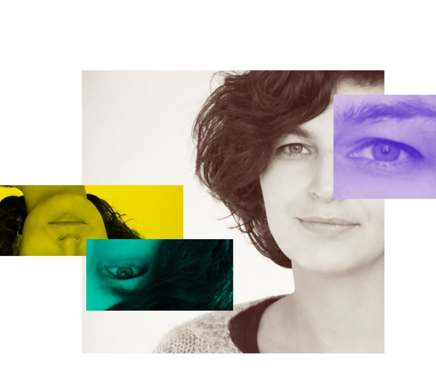

Hi, I’m Yulia.
I started in production: compositing for TV in Lisbon, then two years as a remote motion designer for Semrush, making explainer videos, social content, and product animation for an international team.
In between, I spent four years coordinating and teaching an education programme across schools and kindergartens, and I still produce a monthly cultural market with dozens of vendors and workshops. Different rooms, same instinct: I like taking something that doesn’t have a shape yet and building the shape.
My head doesn’t really switch off. I’m always redesigning something: a scene, a schedule, a room full of vendors, a system that’s almost working. I see the pattern under the surface and I can’t leave it alone until it’s better, that’s optimization, really. It’s an analytical mind as much as a creative one: I like seeing the big picture and then figuring out how the pieces actually fit together. That’s not a skill I learned for a job description. It’s just how I look at things.
Right now I’m looking at creative production and programme coordination, with the production side still in reach. I’ve done the compositing and motion myself, so I can step in wherever it’s useful.
I’m based in Portugal and work remotely. Have a look around, and get in touch if something here fits.